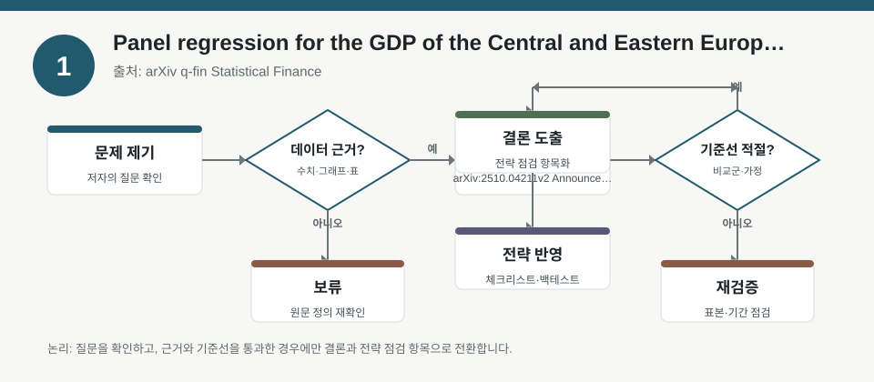
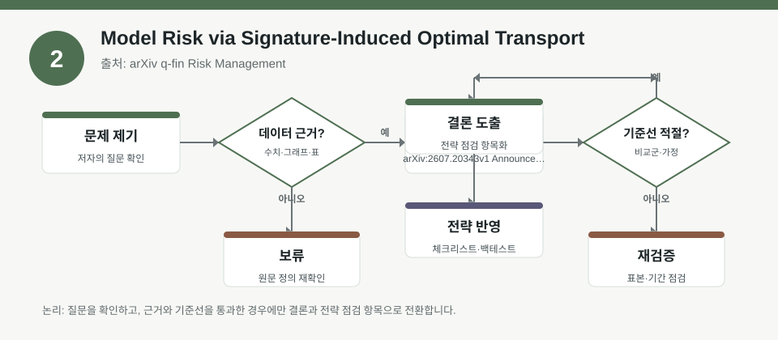
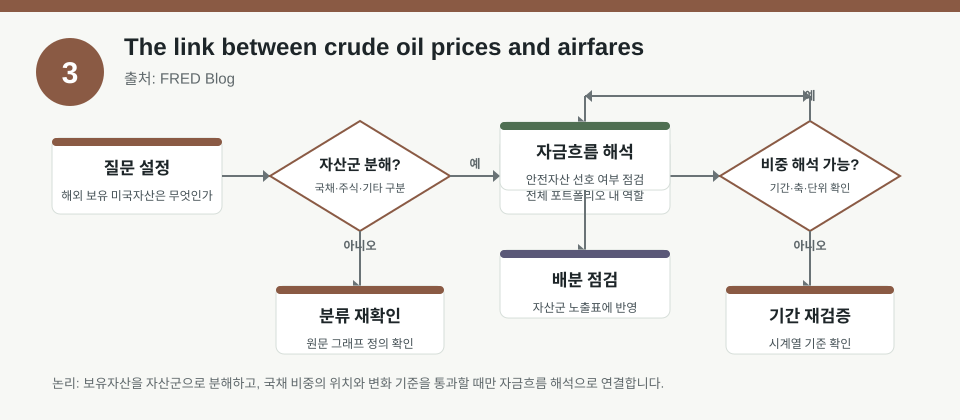

핵심 요약
- 결론: 세 자료 모두 “변수 간 관계”를 다루지만, 한국 투자자 관점에서는 섹터 노출·환율·금리·에너지 비용·모형오차를 함께 점검하는 해석 프레임이 핵심입니다.
- 원칙: 수치가 메타데이터에 없으면 사실로 단정하지 말고, 원문에서 계수·표본·기간·가정·강건성 검증을 먼저 확인해야 합니다.
주목할 자료
| 번호 | 자료 | 출처 | 원문 | 핵심 내용 | 데이터 포인트 | 리스크/한계 |
|---|---|---|---|---|---|---|
| 1 | Panel regression for the GDP of the Central and Eastern European countries using time-varying coefficients | arXiv q-fin Statistical Finance | 원문 보기 | CEE 국가 GDP를 시간가변 계수 패널회귀로 해석해, 성장 동학과 수렴 경로의 변화 가능성을 본 자료입니다. | 시간에 따라 변하는 계수, 패널 구조, 지역별 이질성 점검 | 표본 기간·변수 정의·계수 안정성·내생성 통제가 원문에서 확인돼야 합니다. |
| 2 | Model Risk via Signature-Induced Optimal Transport | arXiv q-fin Risk Management | 원문 보기 | 시그니처 기반 특징공간과 최적수송을 결합해 경로공간의 모델 리스크를 정량화하는 틀을 제안합니다. | path-space model risk, optimal transport cost, signature coordinates | 수학적 가정·근사화·특징공간 선택에 따라 결과가 달라질 수 있어 구현 세부를 검토해야 합니다. |
| 3 | The link between crude oil prices and airfares | FRED Blog | 원문 보기 | 유가가 제트연료를 거쳐 항공권 가격에 영향을 줄 수 있지만, 전가 강도와 시차는 고정적이지 않다는 점을 설명합니다. | 유가-제트연료-항공요금 전이, 비용 전가 시차, 가격 비선형성 | 단일 기간 패턴을 일반화하기 어렵고, 요금 규제·경쟁·헤지 여부를 함께 봐야 합니다. |
자료별 상세
1. Panel regression for the GDP of the Central and Eastern European countries using time-varying coefficients

- 핵심: 시간가변 계수 패널회귀는 국가별 성장률이 고정된 관계가 아니라 정책·외부충격에 따라 달라질 수 있음을 보여주는 해석 틀입니다.
- 데이터 포인트: 계수의 시간변화, 국가 간 이질성, 패널 고정효과 여부 같은 요소가 핵심 검토 대상입니다.
- 리스크: 표본 구간, 변수 측정 방식, 구조적 단절, 내생성 통제가 충분한지 원문에서 확인해야 합니다.
- 투자전략 반영 예시: 한국 주식 투자자는 유럽 경기민감 업종이나 수출주를 볼 때, 지역 경기 둔화가 업종 실적과 환율 민감도에 어떻게 연결되는지 점검하는 체크리스트로 활용할 수 있습니다.
- 실행 예시: 분기별로 “유럽 매출 비중, 원/유로 환율, 글로벌 제조 PMI, 금리 수준”을 함께 기록해 섹터 노출 점검표를 만드는 방식이 적절합니다.
2. Model Risk via Signature-Induced Optimal Transport

- 핵심: 모델 리스크를 단일 분포 비교가 아니라 경로의 형태와 순서를 반영한 특징공간 문제로 다시 정의한 접근입니다.
- 데이터 포인트: signature coordinates, optimal transport cost, affine score 가정은 어떤 경로를 더 가깝게 볼지 결정하는 중요한 설계 요소입니다.
- 리스크: 특징 추출 방식과 OT 비용함수 선택에 따라 결과가 바뀔 수 있어, 강건성 검증과 계산 복잡도를 함께 봐야 합니다.
- 투자전략 반영 예시: 한국 주식 투자자는 포트폴리오 리스크 점검 시 변동성 급등, 상관관계 붕괴, 하락장 경로를 별도 시나리오로 나눠 모델링하는 체크리스트를 둘 수 있습니다.
- 실행 예시: 백테스트 전 “정상장/고변동성/금리충격/환율충격” 4개 경로군을 나눠 성과와 최대낙폭이 얼마나 달라지는지 비교하는 검수표를 만들 수 있습니다.
3. The link between crude oil prices and airfares

- 핵심: 유가 상승이 항공권 가격으로 바로 이어진다고 단정하기보다, 제트연료 비용과 운임 전가의 시차를 함께 보는 것이 중요합니다.
- 데이터 포인트: 유가, 제트연료, 항공요금의 전이 경로와 시차, 그리고 전가 강도의 변동성이 핵심입니다.
- 리스크: 항공권 가격은 수요, 경쟁, 규제, 헤지, 계절성 영향을 받으므로 한 변수로 설명하기 어렵습니다.
- 투자전략 반영 예시: 한국 투자자는 항공·여행·정유·화학 관련 종목의 섹터 노출을 볼 때 유가뿐 아니라 원화 약세, 금리, 소비심리까지 묶어 점검할 수 있습니다.
- 실행 예시: 체크리스트에 “유가 변동, 원/달러 환율, 여객 수요, 공항/항공 규제, 유류비 헤지 비중” 항목을 넣어 월별로 업데이트하는 방식이 유효합니다.
팩터·리스크·포트폴리오 관점
- 핵심: 세 자료는 모두 팩터를 “고정된 단일 관계”가 아니라 시간·경로·비용 전가가 바뀌는 동적 구조로 봐야 한다는 점을 시사합니다.
- 검수: 실제 적용 전에는 표본 기간, 변수 정의, 계수 안정성, 경로 가정, 비용함수, 그리고 한국 시장의 환율·금리·규제 조건을 따로 확인해야 합니다.
정리
- 결론: 한국 투자자에게 중요한 건 예측 숫자보다, 데이터가 어떤 가정 위에서 만들어졌는지와 섹터·환율·금리·유가 충격에 얼마나 민감한지입니다.
- 다음 확인: 원문에서 계수 표와 강건성 검정, 모델 사양, 표본 기간, 비용 전가 구조를 확인한 뒤 내부 체크리스트에 반영해야 합니다.